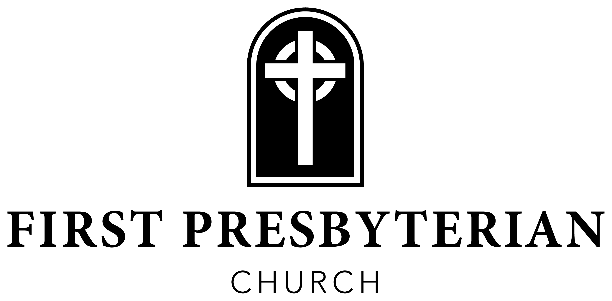

Flower Dedication
The flowers adorning the sanctuary this morning are given in honor of our parents, Brian & Kristy Thomas, on the occasion of their 25th wedding anniversary. — Landon & Peyton Thomas Ecclesiastes 4:9–12
Announcements
Every Member Canvass. Baskets are available at each entrance for you to place your “Time & Talents Form.” Envelopes are also provided to submit your “EMC Commitment Card.” Please place them in the baskets as you enter or exit the sanctuary. Extra EMC booklets are available at each entrance as well. If you would like to submit these items electronically, please scan the QR code on the back of the pew, then click on “Every Member Canvass” on the church website.
Samaritan’s Purse Shoeboxes. Collection boxes are available in the children’s wing and the side entrance by the church office. You can participate by shopping and collecting items, or by donating monetarily — each shoebox costs $10 to ship. Items needed: small composition notebooks, pencils, small cars/trucks, puzzles, jump ropes, hair bows/barrettes/brushes/combs, underwear in larger sizes, and small stuffed animals. No liquids, candy, or food!
37th Community Thanksgiving Meal. Join us on Thanksgiving morning, Thursday, November 26, as we prepare and deliver 750 Thanksgiving meals to those who need them throughout Alcorn County. This is a HUGE project and can only be accomplished with the help of many. It is a great opportunity for the members of FPC to be disciples by “living and loving like Jesus.” Please complete the insert to volunteer your time and place it in the offering plate, or bring it to the church office.
Those Who Serve Today
Assisting Elder — Dave Shanklin
Greeters — Garett & Mary Elizabeth Pounders
Acolytes — Blair Bryant & John Butler
Circle of Prayer — Alberto Albarracin & Becky Stewart
Children’s Church — Ken & Edi Williams
AV Engineer — Russell Smith
Ushers — Bubba Labas, Randy Lambert, Alan Smith, & Henry Labas
Nursery — Deborah Kiddy, Courtney Monaghan, Sallie Kate Williams, Katty Albarracin, Abby Moore, Tara Mathis, & Jeannie Blackwelder
Church Staff
Rev. Waring Porter - Pastor
Gregg Parker - Dir. of Discipleship
Bobby Capps - Dir. of Outreach & Care
Jennifer Shipp - Dir. of Student Ministries
Laura Kate Carmichiel - Dir. of Women’s Min. & Comm.
Phyllis Sellers - Day School Director
Jan Pike - Choir Director
Malechi Doren - Accompanist
Teresa Tsagarakis - Administrative Assistant
Sammy Allred - Bookkeeper
The Church Calendar
October 25 Commitment Sunday for the Every Member Canvass
October 27 Messy Bible Study
October 28 Kids Quest · Messy Bible Study · Youth House
November 26 37th Community Thanksgiving Meal
Online Giving

Scan to give online
919 East Shiloh Rd · Corinth, MS 38834 · fpccorinth.org · 662-286-6638

October 25, 2026
Reformation Sunday
“To be disciples, to make disciples”